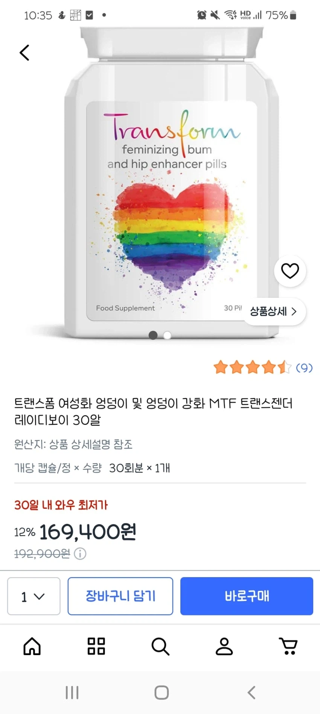

이거먹으면 찌찌생기는거냐?
당장먹는다

이거먹으면 찌찌생기는거냐?
당장먹는다
마!! 함 무봐라 디진다
종료: 자연사
저거 먹으면 미국의 엉덩이가 될 수 있는거냐
ㅋㅋㅋ그래서 어떤성분이 어떻게도움되는건데
성욕 줄어들고 발기 잘 안되고 우울해지고 가슴 봉긋해지는 약?
불법 호르몬일수도 있지만 쿠팡이라 걍 구라일듯 ㅋㅋ
구성 성분 - 민들레뿌리 분말, 현미 분말
이렇게 2개가 끝임. 바라는 효능 기대불가고 가격도 너무 심함
호르몬제가 처방없이 가능함?
그냥 리셋버튼 아닌가
나도 쿠팡에 갑자기 이거 뜨더라 뭔ㅋㅋㅋㅋㅋ
호르몬제 아님?
잘못 복용하다가 훅가는 수가
사기제품이라고 보추인 사람이 댓글달았었는데
에?
의사처방 없이 호르몬제를 팔리가 있나
멍청이들 상대로 한탕하는거지
겠니? 그냥 홀몬을 맞는 게 빠르단다!
로켓배송 아니면 짭이겠네 안삼
정확히 보진않았지만 아마 콩이나 석류같은 여성호르몬 분비에 도움을 주는 음식물들이 들어있을꺼같음 ㅋㅋㅋ
저거 먹는다고 된다면 트젠이 아니라 일반 여성들이 존나 사먹겠지
그냥 콩임
이건또뭐야 ㅋㅋㅋ
피부에 붙히는 위고비도 있더만
파스처럼 붙히기만해도 살이빠진다고!
먹고 인증좀
효능 없음. 민들레 뿌리 분말, 현미 분말이 끝임. 이거 가지고 그 어떠한 효과도 기대할 수 없음. 허브류라서 간독성 위험성만 있는데, 중금속과 유독성 물질에 오염된 흙에서 농약재배해서 제대로 씻지도 않고 대충 만든거면 그거 먹은 사람이 부작용으로 정신적인 영역과 성 호르몬에 문제가 생기는 원리로 트랜스젠더 효과를 받을 가능성은 있을듯 ㅋㅋㅋ
아하 정보추
정'보추'
성분 들여다 보니까 민들레 뿌리 분말, 현미 분말 이 2개가 끝임 ㅋㅋㅋㅋㅋ 높은 가격이면서 막 엄청 화려하게 꾸며놔서 얼마나 대단한가 싶었는데 이 정도일줄은 몰랐네 ㅋㅋㅋ 저게 무슨 성분구성인지 아는 사람이면 공짜로 내놔도 안 먹는건데 성소수자들 상대로 농락하는거 아니냐 ㅠ
성분표보니까 곡물류 다빼버린 미숫가루랑 다를게없네
저런거 안먹어도 가슴튀어나오는중
열심히 먹고 있구나
유튭에 나오는 그 16테라 4만원짜리 외장하드 보는 듯한 기분..

영양제가 영양제지, 몸 구조를 바뀔만큼 효과가 좋다면 의약품으로 분류 될텐데 영양제로 유통된다? 사기일 가능성 99빠센토